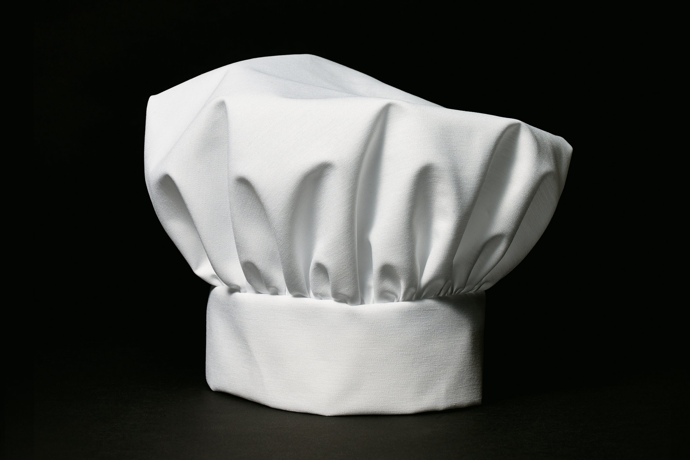
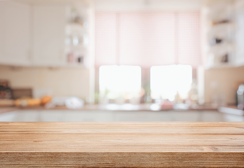

Getting Started
So you've just gotten moved into your new appartment, college dorm, or new house. Your stomach starts to growl and you realize, You dont have any cooking equipment! Worry not, this webpage will outline all the essentials, alternatives, and reccomendations of what you should purchase to make your first self-made meal a great one! You'll need knives, spoons, spatulas, pots, pans, and more. We'll provide recomendations depending on your ambition to cook, what you'll be cooking, and budget, with 3 differnet utensil setups, from beginner to advanced.
 